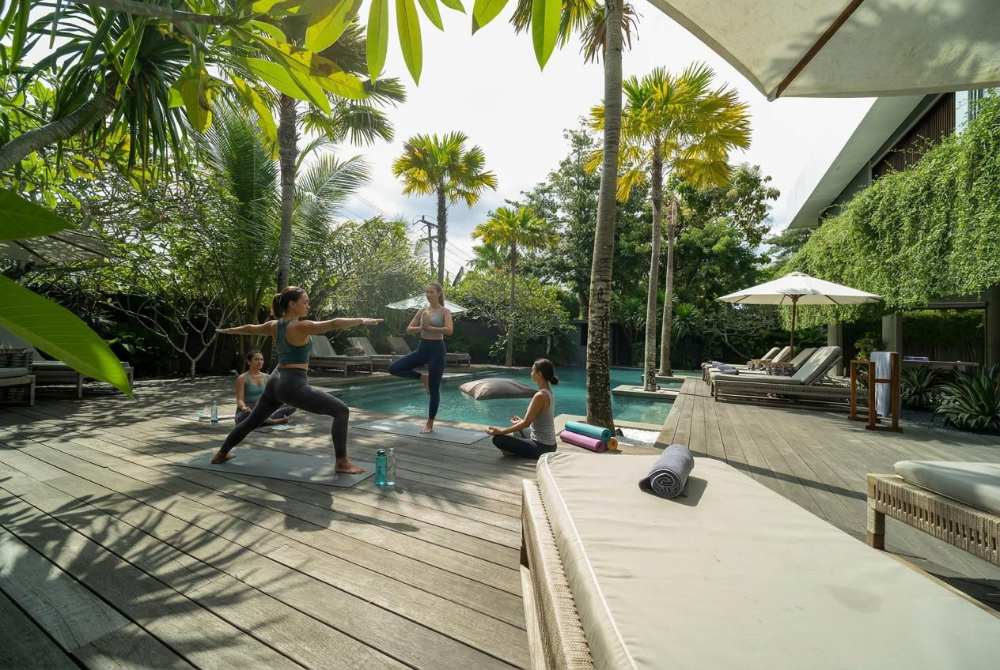
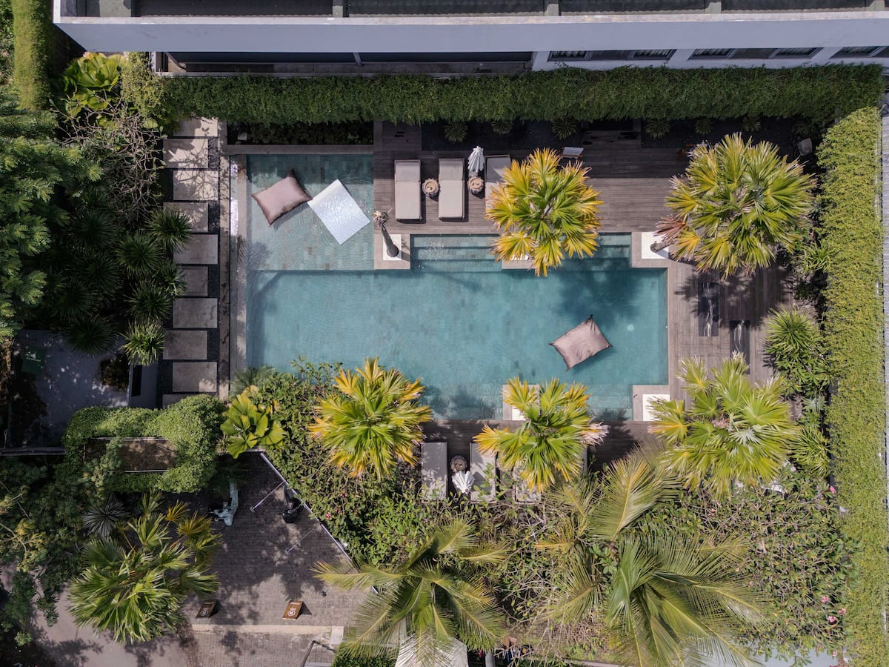
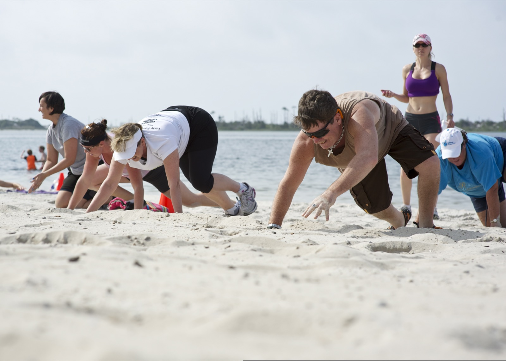
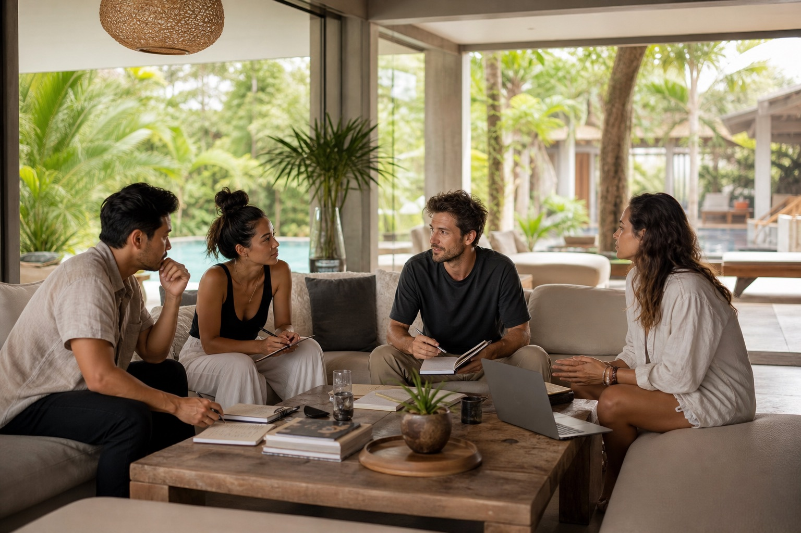

Core group size
The villa is set up for 18 guests, with optional 2 extra beds available for an added fee.

Retreats
A dedicated page for wellness retreats, yoga groups, and hosted stays at a 9-bedroom Bingin villa just 300 meters from the beach stairs.
01 / 07 Why The Villa Works For Retreats
The villa already reads like a retreat brief: fully serviced, 9 en-suite bedrooms, a large pool, generous indoor-outdoor living, and enough communal space for movement, meals, workshops, and quiet recovery without pushing the group off-site.
For organisers, the layout solves the usual retreat tension between togetherness and privacy. Guests can spend the day in shared practice and dining zones, then step back into key-card-access bedrooms with air-conditioning, smart TVs, mini fridges, and private bathrooms.
02 / 07 Guest Capacity
The villa is set up for 18 guests, with optional 2 extra beds available for an added fee.
Every bedroom includes an en-suite shower/WC, air-conditioning, smart TV, mini fridge, and Nespresso machine.
Six rooms use California king beds, while three can be arranged as twins or converted into kings.
Structured arrival and departure timing helps keep retreat turnovers smooth, clean, and guest-ready.
Retreat formats that benefit from a private villa, walkable Bingin access, and enough shared space to support both programming and downtime.
Morning practice at the villa, surf sessions nearby, and an easy group rhythm between movement and ocean time.
Movement, surf, recovery
Works well for slower mornings, reflection sessions, guided circles, and retreat groups that want a calmer pace.
Stillness, circles, reset
Private chef support, massage options, recovery time, and poolside space make the hosted wellness layer feel easy.
Treatments, chef, slow days
A more private villa setup helps groups unplug, soften the pace, and build the day around rest, nature, and routine.
Offline, calm, reset
Strong for groups mixing training, surf, excursions, pool recovery, and active shared days in and around Bingin.
Training, surf, excursions
Useful for hosted offsites, founder groups, creative resets, and strategy sessions that still want privacy and flow.
Workshops, focus, connection
03 / 07 Spaces For Yoga, Wellness, Dining, And Gathering
The communal area is already stocked for retreat-style use: yoga mats, yoga blocks, light dumbbells, skipping rope, balance board, pool volleyball, a shallow pool section, a large dining table, and flexible lounge space for circles, talks, or slower afternoons.
04 / 07 Sample Retreat Schedule
Start the day before the villa and Bingin fully wake up.
Quiet light, yoga mats out early, chilled towels and water ready.
Bring everyone back together after practice without rushing the pace.
Shared meals, printed run sheets, and a softer transition into the day.
Use the core social spaces for deeper programming while the group is still fresh.
Flexible seating, presentation notes, and easy movement between breakout moments.
Let the day open up for guests who want beach, surf, spa, or deeper rest.
Organisers can split the group naturally without the day feeling over-programmed.
Slow the energy down before sunset and prepare guests for the evening gathering.
Works especially well for massage rotations, quiet journaling, or guided decompression.
Close the day with a shared meal and one final moment of connection.
Chef service, Sonos, candles, and an easy social flow into a slower night.
05 / 07 Services Available For Retreat Groups
The villa goes beyond rooms and amenities. Its service menu offers retreat-friendly add-ons that make hosted stays easier to run, especially if you want the stay to feel curated from arrival through the final dinner.

06 / 07 Setup The Perfect Retreat
07 / 07 Testimonials
Rather than inventing quotes, this section uses public guest-review themes and rating signals for the stay.
Based on 64 guest reviews, with the home marked as a guest favourite.
Cleanliness, accuracy, check-in, communication, and location all sit at 4.9.
The review theme summary shows hospitality as the strongest recurring praise point.
Guests frequently call out the Bingin position, walkability, and proximity to the beach and essentials.
The pool repeatedly comes up in reviews, which matters for slow afternoons and social retreat flow.
Shared living areas earn repeated praise, reinforcing the villa’s fit for hosted group time.
Retreat Enquiries
Send your dates, expected guest count, and the kind of retreat you want to host. The villa team can help map the stay, services, and daily rhythm before your group arrives.